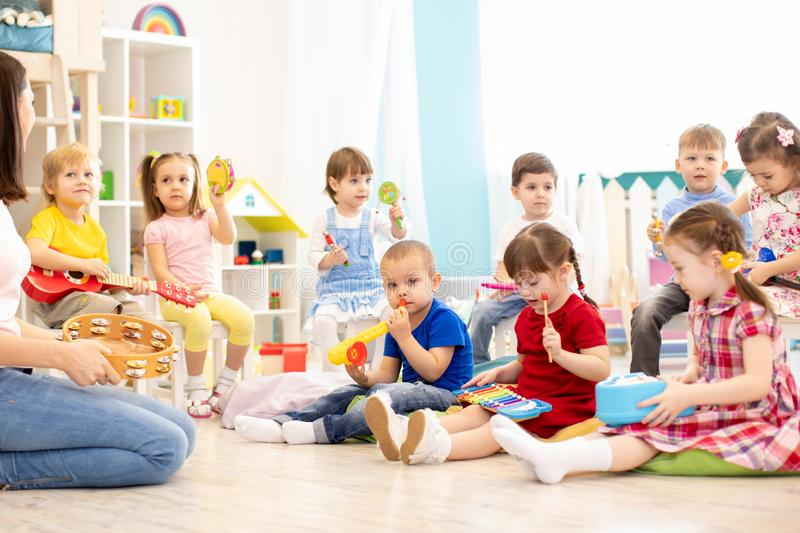
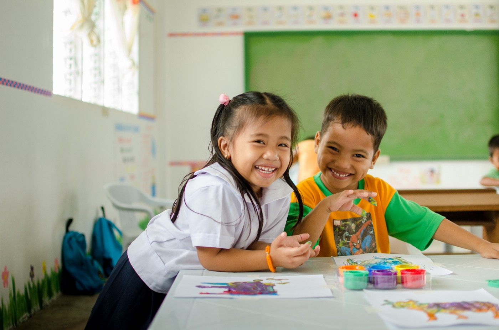

WHERE LOVE FOR LEARNING BEGINS
The Haven of Hope Kindergarten is grounded on international standards, well-established early childhood educational philosophies, and a holistic multi-disciplinary approach.
Haven of Hope uses a theme-based curriculum. Our curriculum framework is aligned with the Literacy Standards of the Ohio Academic Content Standards and Numeracy Standards from Singapore Math.
Our program also includes a balance of dedicated and routine-integrated activities, where they can explore ideas in literacy, math, music and movement, science, social studies and life skills.
Currently Accepting

Nursery
- Ages 2 - 3
- Learn Phonics
- Numbers & Basic Mathematic Computations
- Basic Oral Communication
- Fine and Small Motor Skills
- Nursery Rhymes

Kindergarten
- Age 4
- Learn CVC, CVCC Words
- Logical-Quantitative
- Polite Expressions
- Fine and Small Motor Skills
- Nursery Rhymes
- Recognize Talent and Skills

Preparatory
- Ages 5
- Form and Read Sentences & Short Paragraphs
- Advanced Mathematics
- Make Conversations
- Become an Independent and Creative Learner